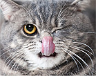
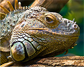

Useful To Know

Cats are believed to be the only mammals who don't taste sweetness. Cats are nearsighted, but their peripheral vision and night vision are much better than that of humans. Cats are supposed to have 18 toes (five toes on each front paw; four toes on each back paw). Cats can jump up to six times their length.
 The domestic dog is a domesticated wolf. The dog descended from an ancient, extinct wolf, with the modern grey wolf being the dog's nearest living relative. The dog was the first species to be domesticated, by hunter–gatherers over 15,000 years ago, before the development of agriculture.
The domestic dog is a domesticated wolf. The dog descended from an ancient, extinct wolf, with the modern grey wolf being the dog's nearest living relative. The dog was the first species to be domesticated, by hunter–gatherers over 15,000 years ago, before the development of agriculture.  Rodents are mammals of the order Rodentia, which are characterized by a single pair of continuously growing incisors in each of the upper and lower jaws. About 40% of all mammal species are rodents. They are extremely diverse in their ecology and lifestyles and can be found in almost every terrestrial habitats, including human-made environments.
Rodents are mammals of the order Rodentia, which are characterized by a single pair of continuously growing incisors in each of the upper and lower jaws. About 40% of all mammal species are rodents. They are extremely diverse in their ecology and lifestyles and can be found in almost every terrestrial habitats, including human-made environments. Birds are a group of warm-blooded vertebrates constituting the class Aves, characterised by feathers, toothless beaked jaws, the laying of hard-shelled eggs, a high metabolic rate, a four-chambered heart, and a strong yet lightweight skeleton. Birds live worldwide and range in size from the 5.5 cm (2.2 in) bee hummingbird to the 2.8 m (9 ft 2 in) ostrich.
Birds are a group of warm-blooded vertebrates constituting the class Aves, characterised by feathers, toothless beaked jaws, the laying of hard-shelled eggs, a high metabolic rate, a four-chambered heart, and a strong yet lightweight skeleton. Birds live worldwide and range in size from the 5.5 cm (2.2 in) bee hummingbird to the 2.8 m (9 ft 2 in) ostrich.  Fish are aquatic, craniate, gill-bearing animals that lack limbs with digits. They form a sister group to the tunicates, together forming the olfactores. The earliest organisms that can be classified as fish were soft-bodied chordates that first appeared during the Cambrian period.
Fish are aquatic, craniate, gill-bearing animals that lack limbs with digits. They form a sister group to the tunicates, together forming the olfactores. The earliest organisms that can be classified as fish were soft-bodied chordates that first appeared during the Cambrian period. 
Reptiles are tetrapod animals in the class or clade Reptilia. As a class in Linnean taxonomy, Reptilia refers to a paraphyletic grouping comprising all amniotes except synapsids and Aves. The class Reptilia comprises turtles, crocodilians, snakes, amphisbaenians, lizards, tuatara, and their extinct relatives.